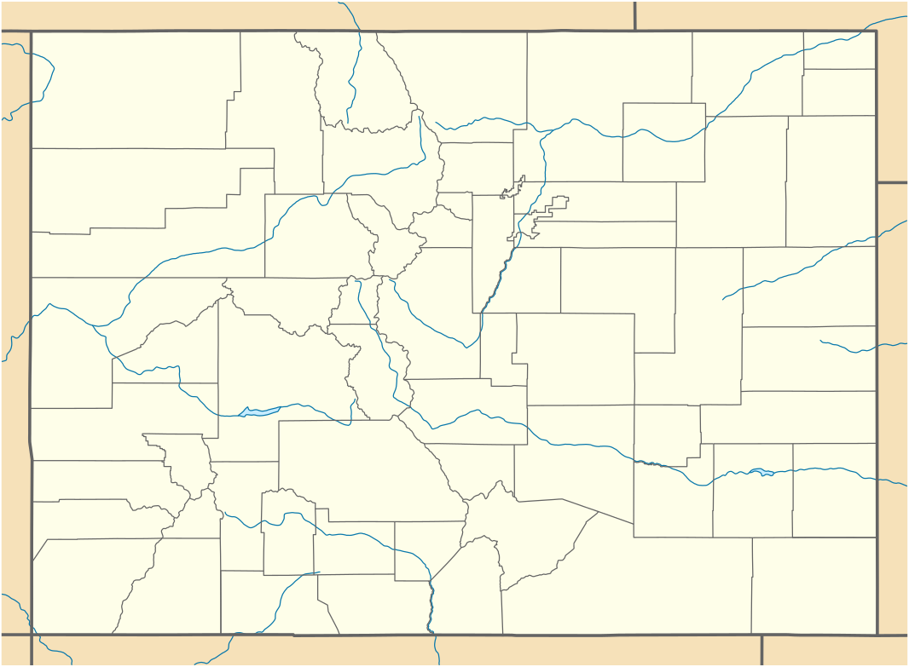

Hypothesis: There are more electric bike trails in the western half on Colorado than in the eastern half

Map of Colorado E-Bike Trails
Key:
E-Bike Trails
County Lines
Rivers
Conclusion: There are more E-Bike trails in Western Colorado. This is likely because there are only mountains in the west.